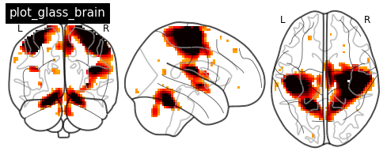

Python for Neuroimage data
桑峰 / 2021-11-20
DICOM文件
DICOM格式是医学成像设备输出的统一的文件格式，它包含数据头信息和数据信息两部分。其中头信息包含扫描设备的信息以及被试的信息等，另外还包括其他关于数据的元信息。数据部分是扫描设备采集到扫描物体的信号值。
利用Pydicom包可以使用Python操作DICOM文件，包括对DICOM文件的读写、头信息的增删改等。
安装
pip install pydicom
# 或
conda install -c conda-forge pydicom
示例数据
from pydicom.data import get_testdata_file
fpath = get_testdata_file("CT_small.dcm")
fpath
Out: ‘/Applications/miniconda3/lib/python3.9/site-packages/pydicom/data/test_files/CT_small.dcm’
读入文件
from pydicom import dcmread
ds = dcmread(fpath)
ds
输出：
Dataset.file_meta -------------------------------
(0002, 0000) File Meta Information Group Length UL: 192
(0002, 0001) File Meta Information Version OB: b'\x00\x01'
(0002, 0002) Media Storage SOP Class UID UI: CT Image Storage
(0002, 0003) Media Storage SOP Instance UID UI: 1.3.6.1.4.1.5962.1.1.1.1.1.20040119072730.12322
(0002, 0010) Transfer Syntax UID UI: Explicit VR Little Endian
(0002, 0012) Implementation Class UID UI: 1.3.6.1.4.1.5962.2
(0002, 0013) Implementation Version Name SH: 'DCTOOL100'
(0002, 0016) Source Application Entity Title AE: 'CLUNIE1'
...
访问数据的子元素
可以通过两种方式访问ds中的元素，其一是利用元素的位置，即每个元素中最前面的两个两位十六进制数，如(0x0043, 0x104e)；其二是利用元素的名称访问。下面对三种方式分别进行演示。
按位置访问
elem = ds[0x0008, 0x0008]
elem
Out: (0008, 0008) Image Type CS: [‘ORIGINAL’, ‘PRIMARY’, ‘AXIAL’]
按名称访问
elem = ds['ImageType']
elem
Out: (0008, 0008) Image Type CS: [‘ORIGINAL’, ‘PRIMARY’, ‘AXIAL’]
访问元素的值
val = ds.ImageType
val
val = ds['ImageType'].value
val
Out: [‘ORIGINAL’, ‘PRIMARY’, ‘AXIAL’]
嵌套元素
头信息中包含部分嵌套的元素，这些元素的子元素不能通过位置和名称直接访问，得先获取到嵌套元素后，再按照类似数组的方式访问它里面的元素。
nelem = ds['OtherPatientIDsSequence']
nelem
Out: <Sequence, length 2>
nelem[0]
Out: (0010, 0020) Patient ID LO: ‘ABCD1234’
(0010, 0022) Type of Patient ID CS: ‘TEXT’
修改元素
nelem[0]['PatientID'].value = 'TestDemo'
# 或
nelem[0].PatientID = 'TestDemo'
删除元素
del ds[0x0028, 0x1050]
# 或
del ds['PatientID']
增加元素
ds.add_new([0x0028, 0x1050], 'DS', "100.0")
# 或
ds.WindowWidth = 500
保存文件
ds.save_as('Test.dcm')
NIFTI文件
安装
pip install nibabel
数据获取
以下代码会自动下载示例数据到nibabel的目录下。
import os
import numpy as np
from nibabel.testing import data_path
example_file = os.path.join(data_path, 'example4d.nii.gz')
example_file
Out: ‘/Applications/miniconda3/lib/python3.9/site-packages/nibabel/tests/data/example4d.nii.gz’
数据读取
import nibabel as nib
img = nib.load(example_file)
img
Out: <nibabel.nifti1.Nifti1Image at 0x7fd908af12b0>
这里的img就是Nifti文件本身，通过它可以访问到文件的头信息和数据矩阵。
数据头信息
header = img.header
header
print(header)
Out: <nibabel.nifti1.Nifti1Header at 0x7fd908af1460>
<class 'nibabel.nifti1.Nifti1Header'> object, endian='<'
sizeof_hdr : 348
data_type : b''
db_name : b''
extents : 0
session_error : 0
regular : b'r'
dim_info : 57
dim : [ 4 128 96 24 2 1 1 1]
intent_p1 : 0.0
intent_p2 : 0.0
intent_p3 : 0.0
intent_code : none
datatype : int16
bitpix : 16
slice_start : 0
pixdim : [-1.000000e+00 2.000000e+00 2.000000e+00 2.199999e+00 2.000000e+03
1.000000e+00 1.000000e+00 1.000000e+00]
vox_offset : 0.0
...
数据矩阵
data = img.get_fdata()
data.shape
Out: (128, 96, 24, 2)
数据矩阵可以执行矩阵的运算等操作，可通过numpy包进行执行相关操作。
img对象的slicer方法可以选择特定层的数据，并返回一个img对象。
img_slice = img.slicer[32:-32, ...]
img_slice.shape
Out: (64, 96, 24, 2)
img包含一个标识矩阵方向与实际空间中方向的矩阵，较affine矩阵，可通过img.affine访问。
通过函数nib.orientations.aff2axcodes(img.affine)可返回affine对应的实际空间中的方向。具体的信息请参考：https://sangfengchn.github.io/home/post/2021/06/02/blog/
上面函数的返回信息为：(‘L’, ‘A’, ‘S’)，表示矩阵x轴的正方向为被试的左边，矩阵y轴的正方向为被试的前面，z轴正方向表示被试的下面。详细描述：https://nipy.org/nibabel/coordinate_systems.html#nibabel-always-uses-an-ras-output-space
保存
img_slice.to_filename('TestNifti.nii.gz')
# 或
img_save = nib.Nifti1Image(data, img.affine)
nib.save(img_save, 'TestNifti2.nii.gz')
可视化
nilearn提供了较为完备的可视化功能，同时也提供了统计功能。这里只介绍它的可视化功能。
加载数据
from nilearn import datasets
# one motor contrast map from NeuroVault
motor_images = datasets.fetch_neurovault_motor_task()
stat_img = motor_images.images[0]
stat_img
Out: ‘/Users/xxxx/nilearn_data/neurovault/collection_658/image_10426.nii.gz’
演示一：激活图
from nilearn import plotting
plotting.plot_stat_map(stat_img, threshold=3, title="plot_stat_map", cut_coords=[36, -27, 66])

演示二：交互激活图
plotting.view_img(stat_img, threshold=3)

演示三：玻璃脑
plotting.plot_glass_brain(stat_img, title='plot_glass_brain', threshold=3)

演示四：结构像
plotting.plot_anat('sub-1000199_ses-1_proc-facemask_T1w.nii.gz', title="plot_anat")
数据分析
nipype提供了常用神经影像分析工具包的接口，包括FSL、FreeSurfer、ANTs等。
这里以ANTs去除非脑组织为例。ANTs去非脑组织的过程是通过配准来实现的，需要事先提供带颅骨的模版和只包含脑组织的模版。
import os
from nipype.interfaces.ants.segmentation import BrainExtraction
anatomical_image = 'sub-1000199_ses-1_proc-facemask_T1w.nii.gz'
template = 'MICCAI2012-Multi-Atlas-Challenge-Data/T_template0.nii.gz'
brainmask = 'MICCAI2012-Multi-Atlas-Challenge-Data/T_template0_BrainCerebellumMask.nii.gz'
out_prefix = 'sub-1000199_ses-1_T1w_seg-brain'
brain_extraction = BrainExtraction(
dimension=3,
anatomical_image=anatomical_image,
brain_template=template,
brain_probability_mask=brainmask,
out_prefix = out_prefix,
num_threads=32)
brain_extraction.run()
原始图像：

结果图像：

另外，nipype还提供了处理流程图（workflow engine），可以方便地将不同处理工具整合进一个处理流程里面。官方文档提供了DTI、fMRI和sMRI部分处理的例子。
参考
-
pydicom: https://pydicom.github.io
-
nibabel: https://nipy.org/nibabel/